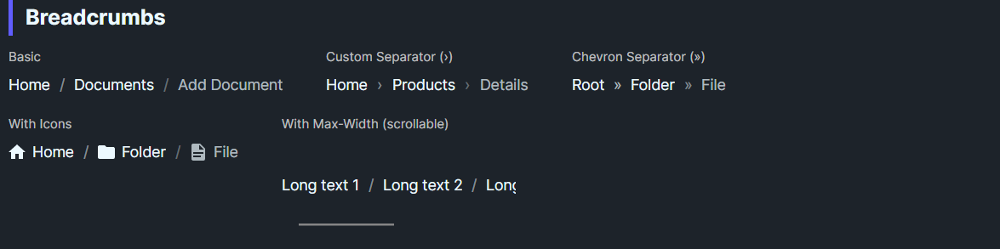

DaisyBreadcrumbs shows a horizontal trail of navigation steps. Provide a Panel (typically a horizontal StackPanel) as Content containing DaisyBreadcrumbItem children; the control re-parents those items into its internal layout, applies separators between items, and marks only the trailing item as non-clickable. Supports custom separators, icons, and command execution on intermediate items.
| Property | Description |
|---|---|
Separator (string, default "/") |
Text used between items. Accepts any string (e.g., ›, », >). |
SeparatorOpacity (double, default 0.5) |
Controls the visual weight of the separator glyph. |
Size (DaisySize) |
Controls text/icon sizing for the breadcrumb items. |
Content (Panel) |
Provide a Panel (e.g., StackPanel with Orientation="Horizontal") containing DaisyBreadcrumbItem children; items are re-parented into the control layout. |
| Property | Description |
|---|---|
Content |
The label text; supports templated content. |
Icon (Geometry) |
Optional leading icon; hidden when not set. |
Command / CommandParameter |
Invoked on click for non-last items when IsClickable=True. |
IsClickable (bool) |
Toggle interactivity; still respects IsLast (last item never executes commands). |
IsFirst / IsLast / Index |
Set by the parent for styling and interaction; not usually set manually. |
Separator / SeparatorOpacity |
Inherited from the parent; override per item if needed. |
DaisyBreadcrumbs when you want manual control over per-item content, separators, and click behavior.DaisyBreadcrumbBar when you have an ItemsSource + ItemTemplate and want built-in overflow ellipsis.<!-- Basic trail -->
<controls:DaisyBreadcrumbs>
<StackPanel Orientation="Horizontal">
<controls:DaisyBreadcrumbItem Content="Home" />
<controls:DaisyBreadcrumbItem Content="Documents" />
<controls:DaisyBreadcrumbItem Content="Add Document" />
</StackPanel>
</controls:DaisyBreadcrumbs>
<!-- Custom separators and opacity -->
<controls:DaisyBreadcrumbs Separator="›" SeparatorOpacity="0.7">
<StackPanel Orientation="Horizontal">
<controls:DaisyBreadcrumbItem Content="Root" />
<controls:DaisyBreadcrumbItem Content="Folder" />
<controls:DaisyBreadcrumbItem Content="File" />
</StackPanel>
</controls:DaisyBreadcrumbs>
<!-- With icons -->
<controls:DaisyBreadcrumbs>
<StackPanel Orientation="Horizontal">
<controls:DaisyBreadcrumbItem Content="Home" Icon="{StaticResource DaisyIconHome}" />
<controls:DaisyBreadcrumbItem Content="Library" Icon="{StaticResource DaisyIconFolder}" />
<controls:DaisyBreadcrumbItem Content="Report.pdf" Icon="{StaticResource DaisyIconDocument}" />
</StackPanel>
</controls:DaisyBreadcrumbs>
<!-- Constrained width (wrap in ScrollViewer for horizontal scroll) -->
<ScrollViewer HorizontalScrollBarVisibility="Auto" HorizontalScrollMode="Auto">
<controls:DaisyBreadcrumbs MaxWidth="220">
<StackPanel Orientation="Horizontal">
<controls:DaisyBreadcrumbItem Content="Long text 1" />
<controls:DaisyBreadcrumbItem Content="Long text 2" />
<controls:DaisyBreadcrumbItem Content="Long text 3" />
<controls:DaisyBreadcrumbItem Content="Long text 4" />
<controls:DaisyBreadcrumbItem Content="Long text 5" />
</StackPanel>
</controls:DaisyBreadcrumbs>
</ScrollViewer>
<!-- Command-driven navigation -->
<controls:DaisyBreadcrumbs Separator=">">
<StackPanel Orientation="Horizontal">
<controls:DaisyBreadcrumbItem Content="Home"
Command="{Binding NavigateCommand}"
CommandParameter="Home" />
<controls:DaisyBreadcrumbItem Content="Projects"
Command="{Binding NavigateCommand}"
CommandParameter="Projects" />
<controls:DaisyBreadcrumbItem Content="Current Project" />
</StackPanel>
</controls:DaisyBreadcrumbs>ScrollViewer if you need horizontal scrolling for long paths.› or ») to improve scanability on dark backgrounds.Command on intermediate items for navigation; the last item is intentionally non-interactive to indicate the current page.DaisyBreadcrumbItem children inside a Panel; the control re-parents them and assigns IsFirst/IsLast and separators automatically.ItemsSource + ItemTemplate scenarios and built-in overflow behavior, use DaisyBreadcrumbBar.